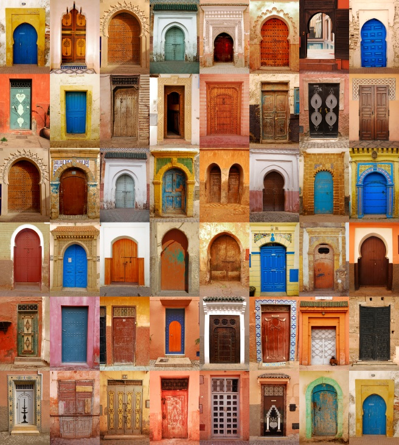

Le jardin médieval servait autrefois a cultiver des plantes pour en faire des remèdes, mais aussia se procurer de la nourriture. On peut y retrouver des légumes, des fruits ainsi que des plantes. Une roseraie embeilit le jardin également
Ce qui est transmis à une personne, une collectivité, par les ancêtres, les générations précédentes, et qui est considéré comme un héritage commun. Patrimoine archéologique, artistique, culturel, intellectuel, religieux; patrimoine collectif, national, social; patrimoine d'une nation, d'un peuple.
